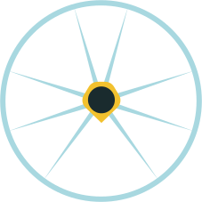

<!DOCTYPE html>
<html lang="en">
<head>
  <meta charset="UTF-8" />
  <meta name="viewport" content="width=device-width, initial-scale=1.0" />
  <title>About Toby · HELM</title>
  <meta name="description" content="The senior, hands-on partner behind Helm, and the person you'll actually talk to." />

  <link rel="stylesheet" href="_ds/helm-design-system-93c98163-fc9f-4f73-8da7-e8e39e149d32/styles.css" />

  <style>
    *, *::before, *::after { box-sizing: border-box; margin: 0; padding: 0; }
    html { scroll-behavior: smooth; }
    body { background: var(--color-bg, #F5F5F0); color: var(--text-primary, #1A2B2E); -webkit-font-smoothing: antialiased; }
    a { color: inherit; }
    ::selection { background: var(--helm-mural-yellow); color: var(--helm-night-teal); }

    /* Motion layer */
    body.helm-anim [data-reveal] { opacity: 0; transform: translateY(22px); will-change: opacity, transform; }
    body.helm-anim [data-reveal="left"] { transform: translateX(-26px); }
    @keyframes helm-reveal { to { opacity: 1; transform: none; } }
    body.helm-anim [data-reveal].is-in { animation: helm-reveal 420ms var(--ease-standard, cubic-bezier(0.4,0,0.2,1)) both; animation-delay: var(--rd, 0ms); }
    body.helm-anim [data-reveal].helm-shown { opacity: 1 !important; transform: none !important; animation: none !important; }
    body.helm-anim header[data-helm-header].helm-shown { opacity: 1 !important; transform: none !important; animation: none !important; }
    body.helm-anim [data-helm-wheel] { transition: transform 120ms linear; }
    @keyframes helm-header-in { from { opacity: 0; transform: translateY(-100%); } to { opacity: 1; transform: translateY(0); } }
    body.helm-anim header[data-helm-header] { animation: helm-header-in 320ms var(--ease-standard, cubic-bezier(0.4,0,0.2,1)) both; }
    @media (prefers-reduced-motion: reduce) {
      body.helm-anim [data-reveal] { opacity: 1 !important; transform: none !important; animation: none !important; }
      body.helm-anim header[data-helm-header] { animation: none !important; }
    }

    /* Layout */
    .helm-desktop-nav { display: flex; }
    .helm-mobile-toggle { display: none; }
    .helm-mobile-menu { display: none; }
    .about-hero-grid { display: grid; grid-template-columns: 1.35fr 0.9fr; gap: clamp(32px,6vw,72px); align-items: center; }

    @media (max-width: 860px) {
      .helm-desktop-nav { display: none !important; }
      .helm-mobile-toggle { display: flex !important; }
      .about-hero-grid { grid-template-columns: 1fr !important; }
      .about-hero-photo { order: -1; justify-self: start; }
      .helm-footer-grid { grid-template-columns: 1fr 1fr !important; }
    }
    @media (max-width: 520px) {
      .helm-footer-grid { grid-template-columns: 1fr !important; }
    }
  </style>

  <script src="https://unpkg.com/react@18.3.1/umd/react.development.js" crossorigin></script>
  <script src="https://unpkg.com/react-dom@18.3.1/umd/react-dom.development.js" crossorigin></script>
  <script src="https://unpkg.com/@babel/standalone@7.25.6/babel.min.js"></script>
  <script src="_ds/helm-design-system-93c98163-fc9f-4f73-8da7-e8e39e149d32/_ds_bundle.js"></script>
  <script src="site/hubspot.js"></script>
</head>
<body>
  <div id="root"></div>

  <script src="site/motion.js"></script>

  <script type="text/babel" src="site/sectionsA.jsx"></script>
  <script type="text/babel" src="site/sectionsB.jsx"></script>

  <script type="text/babel">
    const { Button, Icon, Eyebrow, Badge } = window.HELMDesignSystem_93c981;
    const HELM_MAX_A = 'var(--content-max)';
    const HOME = 'Helm%20Website.html';
    const LINKEDIN = 'https://www.linkedin.com/in/toby-mccorriston-22839522/';

    function AboutPage() {
      const [contact, setContact] = React.useState(false);
      const open = () => setContact(true);
      return (
        <React.Fragment>
          <HelmHeader onContact={open} base={HOME} />

          {/* Hero — name + photo */}
          <section id="top" style={{ position: 'relative', overflow: 'hidden', background: 'var(--helm-night-teal)', color: 'var(--text-on-dark)', padding: 'clamp(64px,10vw,104px) var(--gutter) clamp(64px,9vw,96px)' }}>
            
            <div className="about-hero-grid" style={{ maxWidth: HELM_MAX_A, margin: '0 auto', position: 'relative', zIndex: 1 }}>
              <div>
                <div data-reveal style={{ '--rd': '40ms' }}><Eyebrow tone="accent">The founder</Eyebrow></div>
                <h1 data-reveal style={{ '--rd': '120ms', fontFamily: 'var(--font-display)', fontWeight: 600, fontSize: 'clamp(44px,6.5vw,84px)', lineHeight: 0.96, letterSpacing: '0.01em', margin: '22px 0 0', textTransform: 'uppercase', color: 'var(--helm-facade-white)' }}>Toby<br />McCorriston</h1>
                <div data-reveal style={{ '--rd': '210ms', display: 'flex', alignItems: 'center', gap: 12, marginTop: 22, fontFamily: 'var(--font-display)', fontWeight: 600, fontSize: 15, letterSpacing: '0.16em', textTransform: 'uppercase', color: 'var(--helm-mural-yellow)' }}>
                  Founder <span style={{ color: 'var(--helm-pale-sky)', opacity: 0.5 }}>·</span> <span style={{ color: 'var(--helm-pale-sky)' }}>Helm</span>
                </div>
                <p data-reveal style={{ '--rd': '290ms', fontFamily: 'var(--font-quote)', fontStyle: 'italic', fontSize: 'clamp(18px,2.2vw,25px)', color: 'var(--helm-pale-sky)', margin: '28px 0 0', maxWidth: 520, lineHeight: 1.45 }}>The senior, hands-on partner behind Helm, and the person you'll actually talk to.</p>
                <div data-reveal style={{ '--rd': '380ms', display: 'flex', gap: 14, marginTop: 38, flexWrap: 'wrap' }}>
                  <a href={LINKEDIN} target="_blank" rel="noopener noreferrer"
                     style={{ display: 'inline-flex', alignItems: 'center', gap: 10, background: 'var(--brand-accent)', color: 'var(--helm-night-teal)', fontFamily: 'var(--font-body)', fontWeight: 600, fontSize: 15, letterSpacing: '0.01em', padding: '14px 22px', textDecoration: 'none', transition: 'background var(--dur-base) var(--ease-standard)' }}
                     onMouseEnter={e => e.currentTarget.style.background = 'var(--helm-amber)'}
                     onMouseLeave={e => e.currentTarget.style.background = 'var(--brand-accent)'}>
                    Connect on LinkedIn <Icon name="arrowRight" size={17} />
                  </a>
                  <Button variant="secondary" size="lg" style={{ color: 'var(--helm-pale-sky)', borderColor: 'var(--helm-pale-sky)' }} onClick={open}>Get in touch</Button>
                </div>
              </div>
              <div className="about-hero-photo" data-reveal style={{ '--rd': '260ms', justifySelf: 'end' }}>
                
              </div>
            </div>
          </section>

          {/* Bio */}
          <section style={{ background: 'var(--color-bg)', padding: 'clamp(64px,9vw,104px) var(--gutter)' }}>
            <div style={{ maxWidth: 760, margin: '0 auto' }}>
              <div data-reveal style={{ display: 'flex', alignItems: 'center', gap: 14, flexWrap: 'wrap' }}>
                <Eyebrow index="01">Bio</Eyebrow>
              </div>
              <div data-reveal style={{ '--rd': '90ms', marginTop: 26, display: 'flex', flexDirection: 'column', gap: 22, borderLeft: '3px solid var(--color-border)', paddingLeft: 26 }}>
                <p style={{ fontFamily: 'var(--font-body)', fontSize: 'clamp(18px,2.1vw,22px)', lineHeight: 1.6, color: 'var(--text-secondary)', margin: 0 }}>Over the past 18 years, I've supported some of the advertising and art industry's most respected names — including BMB, Droga5, Karmarama (now Accenture Song), David Zwirner, Sadie Coles, and a number of family offices. In that time, I've learned that great IT support isn't about the technology itself, it's about making that technology invisible to the people who rely on it.</p>
                <p style={{ fontFamily: 'var(--font-body)', fontSize: 16.5, lineHeight: 1.65, color: 'var(--text-muted)', margin: 0 }}>I've overseen everything from large-scale office relocations to straightforward system migrations, always with the same goal: minimal disruption, maximum reliability. I was moving clients to the cloud well before it became the industry standard, giving them a head start on efficiency, flexibility, and security that others are still catching up to.</p>
                <p style={{ fontFamily: 'var(--font-body)', fontSize: 16.5, lineHeight: 1.65, color: 'var(--text-muted)', margin: 0 }}>But technology is only half the story. I've found that a huge part of my own success has come from recognising what others can bring to a project — knowing when a challenge calls for a dedicated team member, and when it calls for the right specialist at the right level, delivered on budget and without compromise. That instinct for matching the right resource to the right problem has been the quiet engine behind a lot of what I've achieved for clients.</p>
                <p style={{ fontFamily: 'var(--font-body)', fontSize: 16.5, lineHeight: 1.65, color: 'var(--text-muted)', margin: 0 }}>Outside of work, family comes first for me. When I do get time to myself, you'll usually find me on the golf course, chasing the kind of personal focus and discipline that only that game demands, or out on the water sailing, where trusting your team and pulling together is everything. Both, in their own way, shape how I show up for my clients — precise, dependable, and always working as part of the team, not just alongside it.</p>
              </div>
              <p data-reveal style={{ '--rd': '160ms', marginTop: 32, fontFamily: 'var(--font-body)', fontSize: 14, color: 'var(--text-muted)' }}>
                Want the details straight from the source? <a href={LINKEDIN} target="_blank" rel="noopener noreferrer" style={{ color: 'var(--brand-primary)', fontWeight: 600, textDecoration: 'none' }}>View Toby's LinkedIn profile →</a>
              </p>
            </div>
          </section>

          <HelmCtaFooter onContact={open} base={HOME} />
          <HelmContact open={contact} onClose={() => setContact(false)} />
        </React.Fragment>
      );
    }

    ReactDOM.createRoot(document.getElementById('root')).render(<AboutPage />);
  </script>
</body>
</html>
